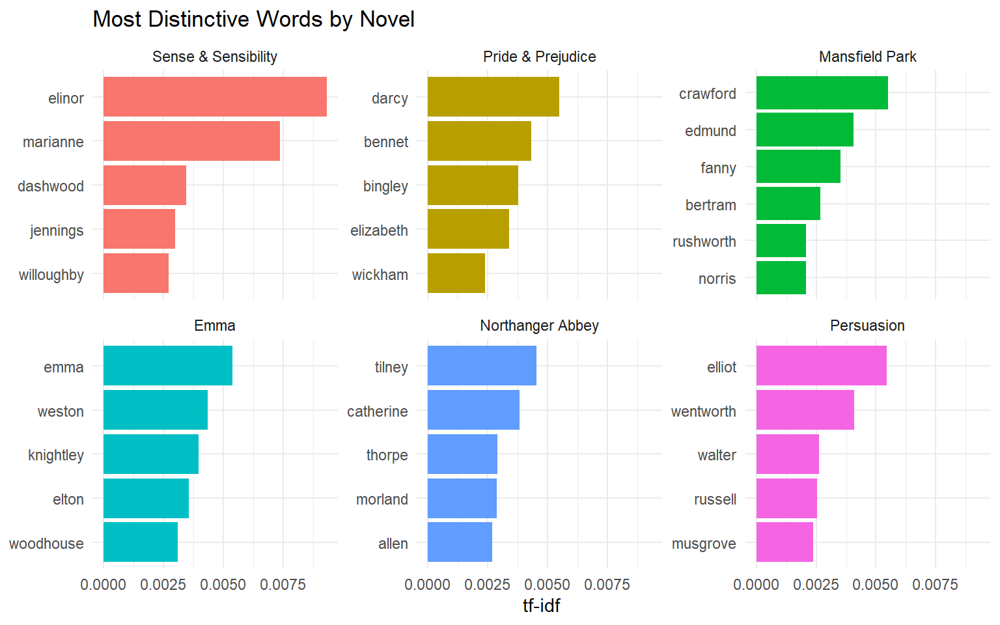
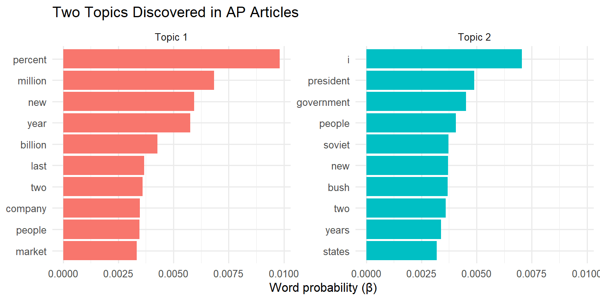
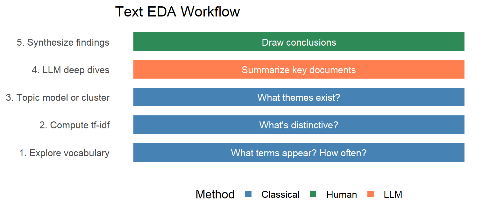

# A tibble: 6 × 2
line_id word
<int> <chr>
1 1 life's
2 1 but
3 1 a
4 1 walking
5 1 shadow
6 1 a Text as Data
From Documents to Discoveries
EDA for Machine Learning
What Questions Can We Ask of Text?
The Investment Analyst’s Problem
You work at an investment firm. Your task:
Review 500 quarterly reports and analyst reactions from companies in your portfolio. Identify emerging themes. Flag concerns. Recommend adjustments.
You cannot read 500 reports carefully. What do you do?
Questions About Text
Given a collection of documents (a corpus), we might ask:
- What words distinguish this document? (distinctive terms)
- What themes appear across the corpus? (topic discovery)
- How similar are two documents? (document comparison)
- How has language changed over time? (temporal patterns)
- What is this document about? (summarization, classification)
The Classical Era (1990s–2010s)
Statistical text analysis:
- Word counts, tf-idf, topic models
- Fast, interpretable, scalable
- Computers “measure” text; humans interpret
This chapter focuses on these foundational methods.
The LLM Era (2020s–)
Large Language Models:
- Direct summarization, Q&A, classification
- Flexible, expensive, less transparent
- Computers “understand” text (or appear to)
The Goal of This Chapter
Build intuition about text-as-data so you can ask better questions and evaluate answers critically—whether from classical methods or LLMs.
Text as High-Dimensional Data
From Text to Numbers
To analyze text computationally, we must convert it to numbers.
Step 1: Tokenization — Break text into units (usually words)
Step 2: Vocabulary — Identify the set of unique terms
Step 3: Counting — Record which terms appear in which documents
The result: a term-document matrix (or document-term matrix).
Example: Macbeth’s Soliloquy
The soliloquy yields 38 word tokens in total.
The Stop Words Problem
Most frequent words:
| word | n |
|---|---|
| a | 3 |
| and | 3 |
| is | 2 |
| an | 1 |
| but | 1 |
| by | 1 |
| frets | 1 |
| full | 1 |
“A” and “is” tell us nothing about Macbeth. These are stop words—common words that carry little information.
After Removing Stop Words
Code
| word | n |
|---|---|
| frets | 1 |
| fury | 1 |
| heard | 1 |
| hour | 1 |
| idiot | 1 |
| life’s | 1 |
Now we see content words: shadow, player, stage, tale, sound, fury…
The Term-Document Matrix
For a corpus of \(D\) documents with vocabulary of \(V\) terms:
\[ \underset{V \times D}{\mathbf{M}} = \begin{pmatrix} m_{1,1} & m_{1,2} & \cdots & m_{1,D} \\ m_{2,1} & m_{2,2} & \cdots & m_{2,D} \\ \vdots & \vdots & \ddots & \vdots \\ m_{V,1} & m_{V,2} & \cdots & m_{V,D} \end{pmatrix} \]
where \(m_{v,d}\) = count of term \(v\) in document \(d\).
Key property: This matrix is extremely sparse. Most entries are zero.
Connection to Part 2
Text is Just Another Feature Matrix
The term-document matrix is an \(n \times d\) matrix where:
- Each document is an observation (row)
- Each term is a feature (column)
- The “curse of dimensionality” applies—\(d\) can be tens of thousands
Everything we learned about high-dimensional data applies:
- PCA can find directions of variation
- Clustering can group similar documents
- Distance measures can compare documents
The Sparsity Challenge

Term-document matrices are extremely sparse
Typical corpora: 99% zeros. Most words don’t appear in most documents.
Which Words Matter?
The Problem with Raw Counts
If we rank words by frequency across a corpus, we get:
the, and, to, of, a, in, that, is, was, for…
These words appear in every document. They don’t distinguish anything.
We need a measure that asks:
Which words are distinctive to this document?
Term Frequency (TF)
Term frequency measures how often a term appears in a document:
\[ \text{tf}(t, d) = \frac{\text{count of term } t \text{ in document } d}{\text{total terms in document } d} \]
High tf means the term is prominent in this document.
But “the” has high tf in every document—not distinctive.
Inverse Document Frequency (IDF)
Inverse document frequency measures how rare a term is across the corpus:
\[ \text{idf}(t) = \log \frac{\text{total documents}}{\text{documents containing term } t} \]
- If term appears in all documents: \(\text{idf} = \log(1) = 0\)
- If term appears in one document: \(\text{idf} = \log(D)\) (large)
IDF downweights common terms, upweights rare ones.
TF-IDF: The Product
\[ \text{tf-idf}(t, d) = \text{tf}(t, d) \times \text{idf}(t) \]
TF-IDF Intuition
A term has high tf-idf if it is:
- Frequent in this document (high tf), AND
- Rare across the corpus (high idf)
This surfaces distinctive words—the words that make this document different.
Example: Jane Austen’s Novels
Figure 1: Top tf-idf words for each Jane Austen novel
What TF-IDF Reveals
Each novel’s distinctive words are character names:
- Emma: Emma, Harriet, Weston, Knightley
- Pride and Prejudice: Darcy, Bennet, Bingley, Elizabeth
- Sense and Sensibility: Elinor, Marianne, Willoughby
TF-IDF automatically surfaces what makes each document unique.
For Your Investment Analyst
TF-IDF on quarterly reports would surface: company-specific terms, unusual product names, emerging risk language…
Finding Themes: Topic Models
Beyond Individual Words
TF-IDF tells us which words are distinctive.
But words cluster into themes:
- “inflation”, “rates”, “Fed”, “monetary” → Macroeconomic concerns
- “supply”, “chain”, “shortage”, “logistics” → Supply chain issues
- “AI”, “automation”, “workforce”, “efficiency” → Technology transformation
Topic models discover these latent themes automatically.
The Topic Model Idea
Two Key Assumptions
- Each document is a mixture of topics
- Document A: 60% finance, 30% technology, 10% politics
- Each topic is a mixture of words
- “Finance” topic: high probability for “market”, “stock”, “earnings”…
Given a corpus, the algorithm discovers both: - What topics exist - Which topics each document expresses
Latent Dirichlet Allocation (LDA)
The most common topic model is Latent Dirichlet Allocation.
Yes—the other LDA! (Recall Chapter 9’s Linear Discriminant Analysis.)
The name:
- Latent: The topics are hidden; we infer them from word patterns
- Dirichlet: A probability distribution used to model mixtures
- Allocation: Assigning words to topics
LDA: The Generative Story
Imagine each document was generated as follows:
- Choose a topic mixture for this document
- “This document is 70% Topic A, 30% Topic B”
- For each word position:
- Roll the dice to pick a topic
- From that topic’s word distribution, generate a word
LDA inverts this process: given documents, infer the topics.
Example: AP News Articles
2,246 Associated Press articles, fit with \(K = 2\) topics:
Figure 2: Top words in each topic (AP articles, K=2)
Interpreting the Topics
Topic 1: percent, million, billion, company, market…
→ Business/Finance
Topic 2: president, government, party, members, congress…
→ Politics/Government
The algorithm knew nothing about these categories—it discovered them from word co-occurrence patterns.
Choosing K: The Number of Topics
Like \(k\)-means clustering, you must choose \(K\).
Too few topics: Themes are too broad, mix unrelated content
Too many topics: Themes are too narrow, hard to interpret
Practical approaches:
- Domain knowledge: “I expect 5–10 themes in this corpus”
- Coherence metrics: Do top words in each topic make sense together?
- Iterative exploration: Try several values of \(K\)
Document-Topic Mixtures
LDA also tells you each document’s topic composition:
| document | Topic 1 (Business) | Topic 2 (Politics) |
|---|---|---|
| Article 127 | 0.89 | 0.11 |
| Article 203 | 0.23 | 0.77 |
| Article 891 | 0.52 | 0.48 |
- Article 127: Mostly business
- Article 203: Mostly politics
- Article 891: Mixed coverage
The LLM Perspective
What LLMs Do Well
Large Language Models excel at tasks that once required topic models:
- Summarization: “Summarize this quarterly report in 3 bullet points”
- Classification: “Is this article about politics, business, or sports?”
- Theme extraction: “What are the main concerns in these documents?”
- Question answering: “What did the CEO say about supply chains?”
Why learn classical methods at all?
When Classical Methods Still Win
Use Classical Methods When:
- Scale: Processing 100,000 documents with an LLM is slow and expensive
- Auditability: You need to explain exactly how conclusions were reached
- Exploration: You don’t yet know what questions to ask
- Quantification: You need precise statistics (tf-idf scores, topic proportions)
Classical methods are often a first pass—filter, cluster, and then use LLMs on selected subsets.
How Classical Concepts Help with LLMs
Even if you use LLMs for analysis, understanding text-as-data helps you:
- Ask better questions: “Which topics dominate?” is a topic model question
- Evaluate outputs critically: Is this term really distinctive? Is this theme coherent?
- Recognize failure modes: LLMs hallucinate; topic models produce incoherent topics
- Design hybrid workflows: tf-idf to find distinctive documents → LLM to summarize them
A Modern Workflow
Text EDA workflow combining classical and LLM methods
Summary
Key Takeaways
- Text is high-dimensional, sparse data — the term-document matrix perspective
- TF-IDF surfaces distinctive words — frequent here, rare elsewhere
- Topic models discover latent themes — documents as mixtures of topics
- Choose tools appropriately — classical for scale/exploration, LLMs for depth
- Concepts transfer — understanding text-as-data makes you a better LLM user
Key Formulas
Term frequency: \[\text{tf}(t, d) = \frac{n_{t,d}}{\sum_t n_{t,d}}\]
Inverse document frequency: \[\text{idf}(t) = \log \frac{|D|}{|\{d : t \in d\}|}\]
TF-IDF: \[\text{tf-idf}(t, d) = \text{tf}(t, d) \times \text{idf}(t)\]
Connections to Earlier Material
| Part 1–2 Concept | Text Application |
|---|---|
| Feature matrix | Term-document matrix |
| Curse of dimensionality | Vocabulary size (10,000+ terms) |
| PCA | Topic models reduce dimensions |
| Clustering | Documents cluster by theme |
| Information theory | IDF relates to entropy/surprisal |
The Two LDAs
A Name Collision Resolved
Chapter 9: Linear Discriminant Analysis — supervised, finds directions that separate classes
Chapter 10: Latent Dirichlet Allocation — unsupervised, finds topics in text
Both involve “allocation” to categories. Context makes the meaning clear.
Exercises
Team Exercise 1: TF-IDF Interpretation
Using the Jane Austen tf-idf results:
- Why are character names the most distinctive words?
- What would happen to tf-idf scores if we combined all six novels into one document?
- How might you modify tf-idf to find distinctive non-name words?
Team Exercise 2: Topic Model Exploration
For the AP news articles:
- What would you expect to see with \(K = 4\) topics instead of \(K = 2\)?
- How would you validate whether the discovered topics are “good”?
- Propose a metric for topic coherence.
Team Exercise 3: Classical vs LLM
Your firm has 10,000 customer reviews of a new product.
- Design a workflow using only classical methods.
- Design a workflow using only an LLM.
- Design a hybrid workflow. Which approach would you recommend and why?
Team Exercise 4: Investment Analyst Revisited
Return to the quarterly report scenario:
- What tf-idf patterns might indicate risk? Opportunity?
- How would you track themes over time (Q1 → Q2 → Q3)?
- What questions would you ask an LLM after classical exploration?
Resources
References
Text Mining with R: A Tidy Approach — Silge & Robinson
Latent Dirichlet Allocation — Blei, Ng, & Jordan (2003)
tidytext package — R tools for tidy text analysis
R Functions Reference
| Function | Package | Purpose |
|---|---|---|
unnest_tokens() |
tidytext | Tokenize text |
bind_tf_idf() |
tidytext | Compute tf-idf |
LDA() |
topicmodels | Fit topic model |
tidy() |
tidytext | Convert to tidy format |
dfm() |
quanteda | Document-feature matrix |